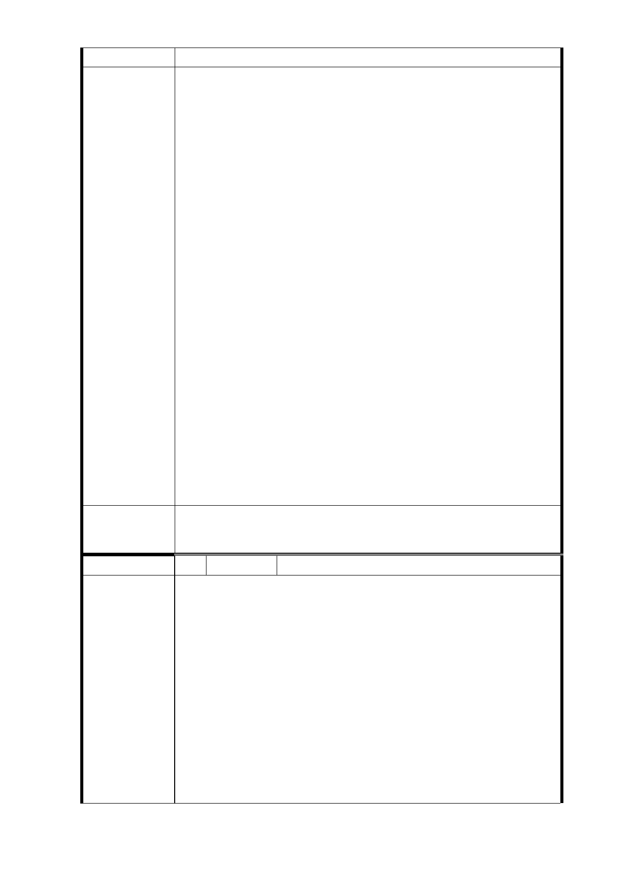

建議辦法
1.同編號 3 研析意見。
2.土地開發區(捷)用地都市計畫變更案之主要計畫及細部
計畫案，經 本市及內政部二級都委會審議通過及公告發
布實施後，配合捷運建設推動時程與地主辦理用地之協議
價購作業，如地主選擇不領取土地補償費，以土地補償費
來換取未來興建公有不動產之樓地板面積。俟完成用地作
業程序後，本局會辦理公開徵求投資人作業，有關投資申
請人之開發能力、財務能力，權益分配比例均會列為評審
項目；俟評選出投資人後，再簽訂土地開發投資契約書。
3.因各開發案之權益分配比例受周遭區域環境、鑑價評估時
市府回應
意見
點之當期市場行情、基地評估時狀況、基地面積與完整
性、使用分區、規劃產品定位等因素影響；故未來開發案
都要經過公開鑑價程序，預估之權益分配比例後續會提報
本府「臺北市臺北都會區大眾捷運系統土地開發權益分配
審議委員會」確認協商底線後，再與投資人協商，俟協商
確定後，方得確定權益分配比例。原則上，本府將秉持為
地主爭取權益之方式辦理。
4.103 年 2 月 21 日本計畫都市計畫委員會第 5 次專案小組
審查意見略以：「本案用地變更部分同意依市府捷運局於
簡報中所擬建議，即…、『R03 站南側捷三用地，維持公
展範圍（基地面積 3,844 ㎡），並辦理土地開發』續提委
員會（大會）審議。」，本案後續仍應依都市計畫委員會
審議決議辦理。
委 員 會 決 議 同「市府回應意見」。
編 號 5 陳情人 陳劭淳（R03 捷三）
捷運併都更聯合開發區～R03 開發區住戶意見及建議事項：
（1）該 RO3 開發區之「老屋更新」部份應符合目前正在實
施「優惠都更獎勵辦法」之最高優惠條件，擇優辦理
（建蔽率設定為 50％、容積率則採最高 450 之標準，
開挖率可採 80％，但停車率不應限採 70％、原住戶所
陳情理由
有權人至少每一人應分配至少一個車位。）同時先備
有相對保証（至少具有法定承諾書）。
（2）捷運工程局必需與原住戶所有權人代表（日後將推舉
代表）共同作業，避免有黑箱作業之嫌。尤其是遴選
日後聯合開發投資者階段；其程序應符合公部門辦理
「重大工程招標」之辦法辦理。
（3）若正式遴選出投資者進行聯合開發後，除原住戶所提
- 77 -